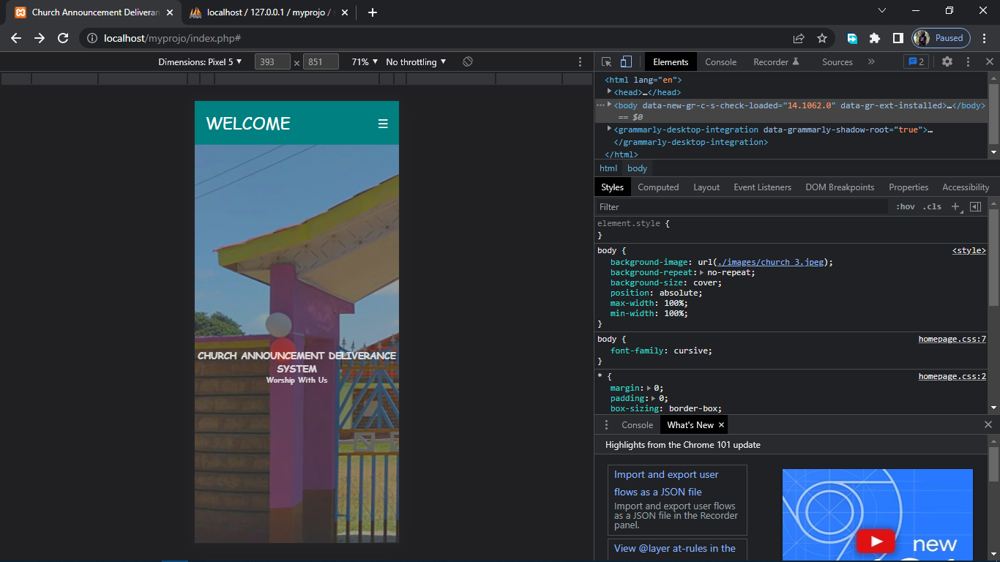

I am Amos Mwiti, a Kenyan born on April 15, 1999. My educational journey began at Nkumari Primary School, where I laid the foundation for my academic pursuits. In 2013, I successfully completed my Kenya Certificate of Primary Education (KCPE), achieving a commendable score of 329 marks. Continuing my educational odyssey, I enrolled at Gikurune Boys High School for my secondary education. Despite the challenges, I emerged with distinction, obtaining a C+ grade upon completion.
Fueled by a burgeoning interest in technology, I undertook a course in computer packages at Kaguru Agricultural Center in Meru County. This experience served as a stepping stone, igniting my passion for the intersection of technology and business. In August 2018, I embarked on a new chapter by joining Kirinyaga University, where I pursued a Bachelor of Business Information Technology degree. Throughout my tenure, I delved deep into the realms of technology, discovering a profound affinity for programming and networking.
My academic journey culminated in the attainment of a Second Class Upper Division degree, a testament to my dedication and aptitude in both technical and business disciplines. Looking ahead, I am poised to leverage my skills and expertise to contribute meaningfully to the ever-evolving landscape of technology and business.
Following my graduation, I found myself in a state of uncertainty. Despite my proficiency in IT and business, I lacked the crucial connections to secure a job. Reluctant to return home empty-handed, I made the decision to pursue opportunities wherever they arose. This led me to a sewage company in Kirinyaga County, where I initially took on the challenging task of digging trenches, some exceeding depths of two meters. The hazardous nature of the work was not lost on me, as rumors circulated about the potential for accidental burial in the trenches. However, after two months of dedication, I progressed to the role of an operator, responsible for managing the machinery that transformed raw materials into concrete. The demanding environment left its mark on me, evident in the reddened eyes caused by constant exposure to cement dust.
Subsequently, I returned home and transitioned to agriculture, where I embarked on cultivating bananas. During this period, I also delved into the realm of data science, a field that captured my interest and led me to discover a passion for data analysis. Although my time spent cultivating bananas was valuable, I eventually redirected my focus to the business sector, specifically debt collection, an experience that will be elaborated upon in the skills section of my portfolio.
The curiosity and interest I have in IT led me to excel in developing websites. I am proficient in HTML for page creation, CSS for styling, and PHP for backend development. Additionally, I leverage JavaScript to add interactivity to the pages. You can view the first website I created, the Church Announcement Delivery System, which simplifies the process of delivering announcements efficiently and with minimal disruptions, catering to large populations regardless of location. check-it-here
Finance has always been my passion, and I found my first role in the banking sector as a collection officer. I began my career at African Financial Solutions (AFS) in Nairobi, where I worked in a call center environment. My responsibilities included contacting debtors, understanding the reasons behind their loan defaults, discussing feasible repayment options, and ensuring timely payments. Additionally, I provided financial education to clients.
You might be wondering about me and what I'm all about. Truth is, I find joy in blending both business and IT worlds. Lately, I've been drawn to the fascinating realm of data analysis. Back when I was starting out with computer packages, I found myself drawn to Excel and Access. Filtering data in Excel felt like a bit of magic to me. Little did I know, it was just the beginning of my journey into deeper analytics. While I wouldn't call myself a master just yet, I've reached a point where I feel pretty comfortable handling a variety of tasks. In my free time, I've been diving into Python for data science. I've gotten pretty cozy with libraries like Pandas and Matplotlib. Plus, I've polished up my skills in SQL for data analysis and have a decent grip on Power BI. My thirst for knowledge in analytics is insatiable—I'm determined to keep learning until I can tackle any analytical challenge that comes my way.